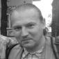

КРАТКО ОБО МНЕ
Я, Жданов Олег Владимирович, временно гражданин террористического, преступного государства: российская федерация, с которым я нахожусь в состоянии конфликта последние
тридцать лет. Начиная с 2014го году, в связи с агрессией против Украины, данный конфликт перешёл в "горячую фазу".
Первое общественно-политическое, просветительское, правозащитное движение (тогда молодёжное) мной и моими единомышленниками было создано в 1989 году. В тех же годах я
написал заявление об отказе от службы в армии СССР, которое было опубликовано в Пресс Бюллетене Сиб.И.А., издаваемым и распространяемым моим другом, и соратником
Алексеем Мананниковым и его единомышленниками.
Далее, несмотря на то, что в связи с отсутствием декоммунизации не находя надлежащей общественной поддержки моя деятельность ушла в тень. Однако я не переставал
осуществлять культурную и просветительскую деятельность. Всю свою жизнь я работал в области декоративно-прикладных ремесел (дерево, керамика, ювелир, далее длинный
список профессий), в процессе данной деятельности я перешел к изучению славянской культуры, в том числе и древних времен (дохристианский период).
В 2012ом году я увидел, что подобных мне людей преследуют по 282й статье УК РФ, в связи с чем вернулся к открытой общественно-политической деятельности,
организовав людей, для противостояния незаконным репрессиям по так называемой "антирусской статье".
В 2013ом году, начиная с событий на Майдане, в СМИ РФ нарастает антиукраинская пропаганда, достигая своего максимума летом 2014го года. Так к примеру, я был уволен
с работы из ДКЖД Владивостока (за так называемую пропаганду фашизма) только за то, что резко критически выразился о "присоединении Крыма к России". Попытка
организовать акцию протеста ник чему не привела. Из-за теле-пропаганды я оказался в среде массового непонимания и агрессии, со стороны простых граждан россии и только
немногие думающие люди поддерживали меня.
Осенью 2014го года, завели очередное уголовное дело, уже на моего друга Антона Королева за то, что он создал страничку в ВК, посвященную украинскому майдану.
Учитывая то, что меня уже приглашали в отдел “Э”. Учитывая выбор Антона поехать в Украину и его планы, я понял, что я могу быть привлечен за так называемую
"укрофашистскую агитацию" и "организацию наёмничества", а именно так должна была быть истрактована моя правозащитная деятельность.
Понимая всю угрозу, со стороны российского государства и имея огромное желание помочь народу Украины в противостоянии российской агрессии, я вместе с Антоном
вдвоем, бежал в Украину, так как понимал, что следующим в списке экстремистов и террористов буду я сам. Ехали мы через Беларусь. Границу мы пересекли в Нові Яриловичі
(пункт контролю), где нас сняли с рейсового автобуса пограничники. Там мы написали им объяснительные о цели пересечении границы. Мне поставили штамп в загранпаспорте,
и мы отправились, через Чернигов, в Киев.
По приезду в Киев мы обратились в Миграционную Службу Украины за получением статуса политического беженца, после чего я получил ДОВІДКУ ПРО ЗВЕРНЕННЯ ЗА ЗАХИСТОМ
В УКРАЇНІ
24.12.2014го года я получил отказ и повторно обратился 26.12.2014го года
03.03.2015го года я повторно получил отказ.
05.03.2015 я обратился в международную организацию "HIAS".
10.04.2015 получил отказ от "ПРАВО НА ЗАХИСТ".
22.04.2015 я с помощью международной организации "HIAS" подал заявление в суд, которая, просрочив время подачи, от моего имени, подала заявку в суд.
В процессе суд несколько раз откладывался и в результате я получил отказ, формальной причиной которого назвали просроченное время подачи заявления.
Летом 2015го года я поехал в Пески под ДАП, где с оружием в руках, вместе с украинскими добровольцами противостоял российской агрессии.
Вернувшись из АТО, я приехал в Киев. Придя в Миграционную Службу Украины и отстояв длительную очередь, я получили отказ в продлении справки о временном пребывании
на территории Украины. В дальнейшем в миграционной службе Украины со мной после хамского общения (это было в присутствии моего знакомого украинского активиста,
который хотел помочь мне с документами) вообще отказались общаться.
З зимы 2014го года по лето 2016го года я занимался волонтерской деятельностью. Был помощником инструктора по боевой подготовке в городе Нижин.
Летом 2015го года ездил в Пески, волонтером, в составе добровольческой группы от партии "СВОБОДА". З 18.06.15 по 13.07.15 року в складі батальйону "Карпатська Січ"
брав участь в бойових діях проти російських окупаційних формувань в рамках Антитерористичній операції.
10 ноября 2015 года на пророссийских и сепаратистских сайтах про меня была неоднократно опубликована статья. В следствии чего о моей деятельности официально стало
известно на территории россии.
Я так же участвовал в общественной и информационной деятельности, направленной против агрессии россии.
Был награждён медалью "БРАТ ЗА БРАТА", выдана рішенням спільного виконавчого комітету УНА УНСО, Україна та Благодійного Фонду FRAC USA.
Начиная с 2014-15го годов мы Іноземні добровольці АТО неоднократно, частным порядком и коллективно прилагали усилия для того, чтобы обратить внимание на проблемы с
легализацией нас.
Занявшись проблематикой Иноземцев АТО, уже в Украине я стал активистом Комітета Визволення Політв'язнев, который проявил активное участие в правовой помощи
иноземцам АТО.
29.08.15. я принял участие в митинге, под Миграционной Службой Украины. После чего мне был выписан штраф в размере 500 гривен, который на тот момент выплатить было
не реально так, как я не мог устроиться на работу из-за просроченной довидки о временном пребывании на территории Украины.
11.09.2015 я принял участие в пресс-конференции посвященной добровольцам-иноземцам АТО.
16.01.2017. принял участие в конференции: Иноземцы АТО, которая была посвящена правовому статусу иностранцев, которые принимали участие в защите территориальной
целостности Украины массовое мероприятие с участием ученых, правозащитных общественных организаций, активистов, иностранцев, студентов высших учебных заведений, на
базе Политической партии Национальный корпус.
Исчерпав все возможные метода борьбы за легализацию и узнал, что мои знакомые иноземцы АТО получили статус беженца в Польше. По совету моего знакомого из Литвы я
несколько раз ходил в консульство Литвы, где мне сказали: добирайся до Литвы, тебе помогут. Позже действительно в Литве статус беженца получит мой друг, который
воевал в составе батальона "Азов".
Летом 2018го года я нелегально пересек границу Украины и Польши и попросил статус беженца у Представителей польских властей. Те не став рассматривать мое прошение
передали меня украинским пограничникам обратно, после чего меня выдворили из Украины в Молдову.
В Молдове я попросил статус политического беженца, которая выдала отказ. Несмотря на это надо отметить очень хорошее отношение в Центре для беженцев ко мне, однако
в связи с пророссийским правительством Молдовы - эта страна не является безопасной для таких как я.
Далее в Кишиневе 26го Ноября мне друг из США купили билет транзитом через Австрию, в Черногорию. 27го Ноября, согласно Дублинской конвенции в транзитной зоне
аэропорта Австрии я попросил статус политического беженца.
З 27го Ноября 2018го года я нахожусь в Австрии. 01.02.2019 я был приглашен на собеседование в BUNDESAMT FUR FREMDENWESEN UND ASYL (ФЕДЕРАЛЬНОЕ УПРАВЛЕНИЕ по
ИНОСТРАНЦАМ И ПРОСИТЕЛЕЙ УБЕЖИЩА), где прошло собеседование.
30.04.2019 я получил отказ (Bescheid) в предоставлении политического убежища, подписанный директором Федерального ведомства по делам иностранцев и убежища:
NUSSBAUMER.
08.05.2019 я получил письмо от Verein Menschenrechte Osterreich (VMO), с предложением о правовой помощи, далее по моему обращению, в течении двух недель
Правозащитная Ассоциация Австрии: Verein Menschenrechte Osterreich (VMO) обжаловала отказ в предоставлении мне политического убежища, подписанный директором
Федерального ведомства по делам иностранцев и убежища: NUSSBAUMER и 17го июня получила отказ Beschwerdevorentscheidung.
В настоящий момент ожидаю суда (который неизвестно, когда будет), в результате которого есть маленькая вероятность того, что мне всё-таки могут предоставить статус
политического беженца, а могут и депортировать на россию, где меня ожидает длительны тюремный срок, где я буду подвергнут пыткам, а возможно (что более вероятный
сценарий, который возможен и без всякого суда) лишат жизни.
Также надо отметить, что на мой взгляд отказ был политически мотивированным и составлен основываясь на многочисленной лжи, направленной в мой адрес и адрес
украинских добровольцев.